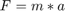

Demo Script
This template serves as an example of a demo that may help reduce ramp up time, for other AEs or anyone learning the content, e.g. customer. I believe if we organize, not all, but some of our primary or "core" demos in a specific way, they will be easier to understand and use. Much like most cars have the turn signal control on the left side of the steering wheel, if we all put similar files or functions in familar places, a new user of a demo will, on average, be able to ramp up faster and spend more time on the technical content or offering improvements.
Contents
Introduction to this template
The template includes an example file demoScript.m in the Navigation folder that is published as an html using the publish command (which you are now reading) to provide documentation and links to files or functions that need to run during the demo.
I have found other useful ways to help other AEs navigate demos, including a Word document saved as an html, or straight html code.
Some AEs prefer using the Simulink Project shortcuts but have mentioned additional documentation may be needed to assist new users of your demo in this case.
Craig Borghesani wrote a series of scripts that publishes a MATLAB file without having to restrict yourself to the syntax requirements of the publish command. Check out the file script2html.m, and related files, in the Navigation\Script2html folder for more info.
Examples if this is new
- Highlight this link but don't highlight this (click on "Highlight this link" to run "runTask1.m"; note the MATLAB code to be executed in the lower left hand corner of the MATLAB window.)
- Open the powerpoint and talk through some slides
- Write an equation: 
- Open a model
- Open subsystems, run models, plot data, etc.
- Open the powerpoint from where you left off
Introduction to the template's structure
This template uses the following standard folder structure:
This template attempts to introduce a standard folder structure (ref: Greg Wolff) with following intent:
Common - Files common to multiple demos, e.g. a DC Motor demo used in both ballTracking and RobotArm or as included here a test script and data to test connectivity to the REFPROP database.
Component - Files related to each component of the demo with one subfolder for each component, e.g. one folder, called CAD, for all the CAD files for the demo, or another folder, called Libraries, for all the +Libraries needed to build your Simscape components for the demo. The folder structure within the Component folder will vary widely. The intent is to make it easy for someone new to the demo to pick it up quickly and reduce the amount of time the owner spends fielding questions on his/her demo.
Documentation - Any documentation related to the demo, e.g. a readMe.txt, a requirements document for the demo, or PDFs or images that show how to setup hardware. If a video of the owner or collaborator walking through some portion of the demo could be helpful to other MathWorkers, the template also includes a Videos folder here.
Navigation - Files needed to navigate the demo. For CDA, it might be a published MATLAB file. For LTC or SPC, it might be a MATLAB file to run by section or a MATLAB file that calls each file in the Task folder. This template includes demoScript.m which is published and opened when you open the project by projectStartup.m and openHTML.m.
Presentation - Files you need when presenting the demo. The template includes a folder for any and all powerpoints and a video. This video could be a video of the hardware in action, in case it isn't working when you need it to or it could be a video that presents the demo to a customer in a short time span. One of these videos could eventually become a webinar online, but the concept is that videos in this folder are meant to be customer facing.
Project - Files related to the management of the project. This template contains startup and shutdown scripts and functions related to the management of the MATLAB path.
Task - Files related to each task to be accomplished during the demo, e.g. one MATLAB file for each task or one folder containing the files needed to perform that task
Utility - Files that may be used throughout the demo. This template includes:
- convertToSLX: to convert all .mdl files in the project to .slx
- convertFromOldVersion: to convert all models from older versions to the current verion
- getRootFolder: puts the current root folder in the workspace
- slstripcomments: strips comments from a MATLAB file (Peter Acklam)
- requiredFiles: Returns a complete list, augmented with filenames called by I/O functions, required to run the program files specified by files. (Brett Shoelson)
Work - Temporary files that can be deleted between each demonstration. Don't worry. Nowhere in the template are these files deleted, but you could specify something like that in projectShutdown.m
Finish the Summary with Services
References or other stuff and copyright
Thank you to moms everywhere for making us eat our vegetables and do our homework